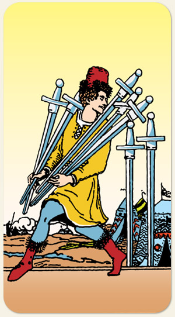

A estratégia individual, a astúcia e a evasão de responsabilidades. Representa a tentativa de resolver problemas de forma isolada ou não convencional, indicando que a mente está operando com segredo ou cautela excessiva. É a carta do "lobo solitário", da engenhosidade e do alerta contra decepções, marcando a necessidade de discernir entre a tática inteligente e a autossabotagem.
Na figura, um homem está levando armas para o campo de batalha, colocando as coisas no devido lugar, tirar os excessos, persistir para alcançar a verdade.
Positivo: Encontrar o problema, descobrir a verdade, ser diplomático, ter uma fala amena, comunicação não violenta, falar aquilo que acredita ser o certo sem de perder o jogo de cintura, ser paciente, buscar flexibilidade, pensamento lógico.
Negativo: Insistir no erro, mentir, falta de diplomacia, ser esquivo, escorregadio, ter uma segunda agenda, ter segundas intenções, só acreditar no que é racional e abrir mão de toda poesia, uma pessoa que pode ser interpretada como falsa por tentar falar o que o outro quer ouvir, persistir no erro, perder a razão por não saber agir da melhor maneira.
Símbolos: Espada Fincada, Espada Inclinada, Postura Inclinada, Olhar para Trás, Tendas.
Cores: Amarelo, Vermelho, Azul.